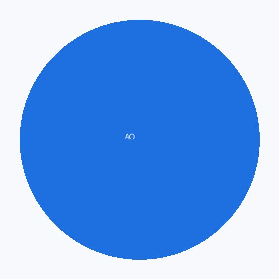

Student work
Students of the MS in Artificial Intelligence at Atlantis University build real tools during the programme. These are their pages — what they made, and what they did on it.
Click any face. Every page below is a working example of what yours becomes.
Summer "D" 2026 · MAI 500

Amara Okonkwo
I turn messy hospital data into decisions clinicians actually trust.
Diego Salvatierra
Ten years in logistics taught me where the delays hide. Now I build models that find the…
Priya Raghunathan
I came for the mathematics and stayed for the arguments about what we should build.
Tomás Béranger
I make the boring parts of compliance run themselves.
Lena Vogt
I photograph birds and teach machines to count them.

Kwame Mensah
Former teacher. I build tools that explain themselves.